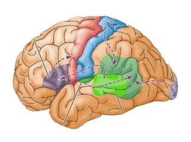
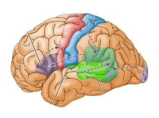

Back to Homepage

Back to Homepage

Motor Cortex
At the end of the frontal lobe. Controls the body's voluntary movements. Parts requiring more precise control (like our fingers) take up more space in the cortex.
Sensory Cortex
At the front of the parietal lobe. (Slice behind the motor cortex.) Registers bodily touch and movement sensations. Parts that are more sensitive (like our lips) take up more space in the cortex.
Visual Cortex
In occipital lobe at the very back. Responsible for processing visual information. Damage to this area can cause blindness.
Auditory Cortex
Just above the ears in the temporal lobe. Processes auditory information. The auditory cortex area on one side is associated with hearing from the ear on the opposite side.
Wernicke's Area
Usually in the left temporal lobe. Involved with language comprehension. Damage to this area disrupts understanding.
Broca's Area
Located in the frontal lobe. Involved with language expression. Damage to this area disrupts the ability to speak.